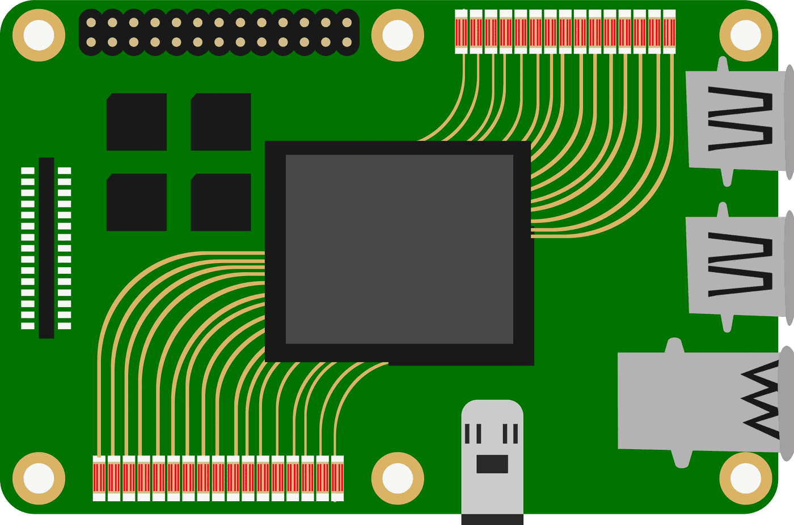

Simulation output as training data
The FEM runs are the source. Their output becomes the dataset the prediction models are built on.
Printed circuit boards are modelled in FEM. From that simulation data I built prediction models — statistical and machine-learning alike — for current values and for how load is applied across the board.

01 Approach
The FEM runs are the source. Their output becomes the dataset the prediction models are built on.
Predicting current values, and how load is applied across the board — the quantities that decide whether a layout holds up.
Built both for the same targets — classical statistical modelling next to machine learning, rather than betting on one approach.
02 Also at AT&S
Anomaly detection models over semiconductor manufacturing data, in Python and SQL.
Built and operated the team's ML pipeline on MLflow — experiment tracking, model versioning and reproducible runs, so results held up beyond a single laptop.